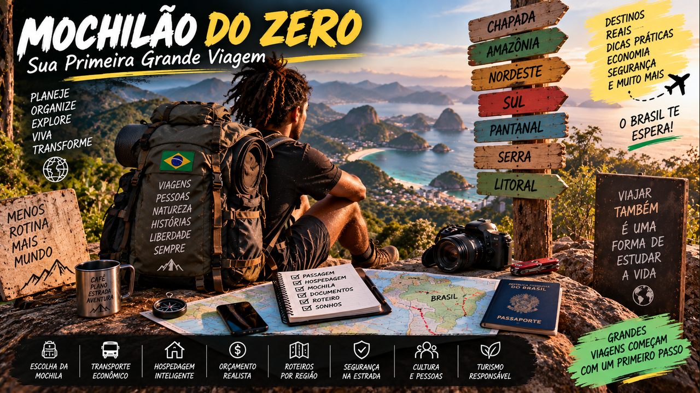
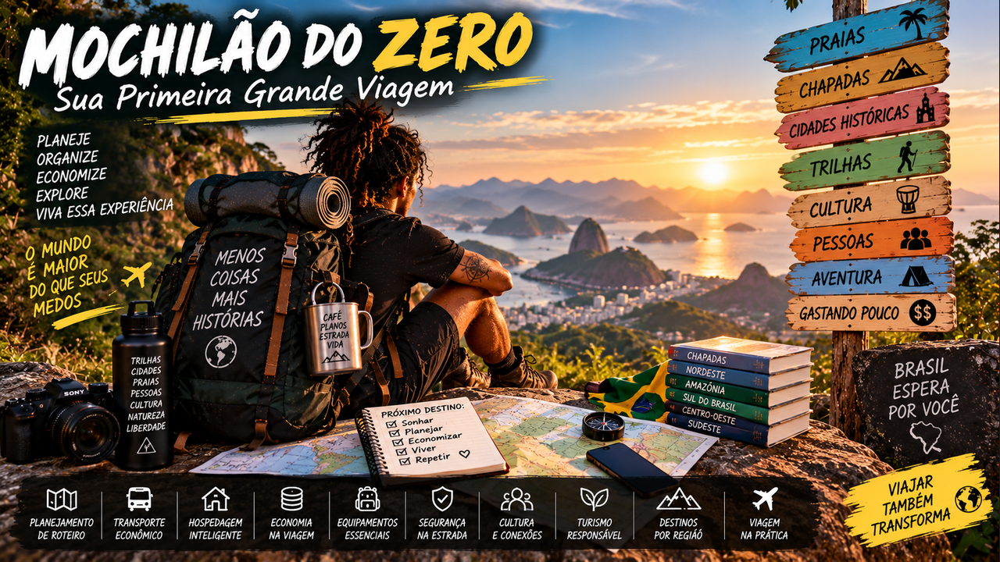

Sua Primeira Grande Viagem — mochila, orçamento, hospedagem, transporte, segurança e liberdade para transformar vontade em estrada.
6 módulos24 aulasProjeto Meu Primeiro Mochilão
0 de 24 aulas concluídas
Grandes viagens começam com um primeiro passo
Este curso foi criado para quem olha uma mochila e pensa: “eu conseguiria?”. Você vai aprender a planejar uma primeira viagem independente sem depender de luxo nem de improviso irresponsável — carregando menos, entendendo custos e ganhando autonomia a cada etapa.

01
Antes de colocar a mochila nas costas
Transforme vontade de viajar em uma primeira aventura possível, consciente e organizada.
Aula 01
O que é um mochilão de verdade
Mochilão não é sinônimo de viajar sem planejamento nem de passar dificuldade. É uma forma flexível de viajar em que você aprende a carregar menos, controlar custos, usar transportes diversos e tomar decisões ao longo do caminho.
Sua primeira viagem não precisa atravessar um continente. Um roteiro de poucos dias dentro do Brasil já ensina hospedagem, deslocamento, orçamento e autonomia. O importante é começar em uma escala compatível com sua experiência.
Atividade prática
Descreva seu primeiro mochilão possível: duração, distância máxima e motivo da viagem.
Aula 02
Escolha um objetivo, não vinte destinos
Quando tudo parece interessante, iniciantes tentam encaixar cidades demais. Cada mudança consome passagem, check-in, energia e tempo. Uma rota menor pode oferecer experiências muito mais profundas.
Escolha o tema central: natureza, cultura, praias, gastronomia, música, cidades históricas ou mistura equilibrada. O roteiro nasce do que você quer viver.
Atividade prática
Escolha um tema e três destinos que formariam uma rota coerente.
Aula 03
Aprenda a ler distâncias
No mapa, duas cidades podem parecer próximas e exigir muitas horas de viagem. Considere estrada, conexões, espera, terminais e deslocamento final até a hospedagem.
Calcule sempre o tempo porta a porta. Um dia perdido em trânsito também possui custo.
Atividade prática
Escolha dois destinos e calcule o deslocamento completo entre eles.
Aula 04
Teste antes da grande viagem
Faça uma viagem-piloto de dois ou três dias. Carregue a mochila que pretende usar, teste seus equipamentos e anote tudo que faltou ou sobrou.
Esse pequeno ensaio reduz ansiedade e evita comprar equipamentos inúteis.
Atividade prática
Planeje um fim de semana-teste usando apenas o que levaria no mochilão.
Ferramenta do módulo — atualize seu Caderno de Mochilão com rota, orçamento, equipamentos e decisões.
02
A mochila certa é a que você consegue carregar
Monte bagagem leve, funcional e adequada ao clima e à duração.
Aula 05
Menos peso, mais liberdade
Cada objeto precisa justificar seu peso. Roupas versáteis, poucas peças combináveis e lavagem durante a viagem reduzem volume. Não arrume a mochila para todas as situações imagináveis.
Depois de pronta, caminhe com ela. Se alguns quilos já incomodam em casa, o problema será maior entre rodoviárias e ladeiras.
Atividade prática
Monte sua mochila e faça uma caminhada de 30 minutos para testar conforto.
Aula 06
Roupas e sistema de camadas
Em vez de levar muitas peças pesadas, combine camadas quando o clima permitir. Pesquise temperatura, chuva e variação entre dia e noite.
Proteja itens que não podem molhar. Uma organização simples por sacos ou divisórias facilita encontrar tudo sem desmontar a mochila.
Atividade prática
Monte uma lista de roupas para sete dias sem escolher uma peça para cada dia.
Aula 07
Kit essencial
Documentos, água, itens de higiene, medicamentos de uso pessoal, carregadores e proteção adequada ao destino são prioridades. Lanterna e pequena fonte de energia podem ser úteis conforme a rota.
Evite montar um kit enorme de emergência sem conhecimento de uso. Para saúde, leve o que é apropriado à sua situação e procure orientação profissional quando necessário.
Atividade prática
Divida sua lista em indispensável, útil e dispensável.
Aula 08
Tecnologia sem excesso
Celular concentra mapa, reservas, documentos e comunicação, então bateria e backup importam. Baixe informações essenciais para acesso offline e mantenha cópias seguras dos documentos.
Câmera e notebook só entram se tiverem função real. Equipamento caro aumenta peso e exige atenção.
Atividade prática
Crie seu Acesso Beta B caso o celular seja perdido ou fique sem bateria.
Ferramenta do módulo — atualize seu Caderno de Mochilão com rota, orçamento, equipamentos e decisões.
03
Dinheiro e economia na estrada
Aprenda a viajar com orçamento realista sem transformar cada decisão em privação.
Aula 09
Quanto custa seu mochilão
Separe transporte principal, deslocamento local, hospedagem, alimentação, atrações, equipamentos e reserva. Depois calcule custo médio diário.
Pesquise valores atuais próximos da viagem. Orçamentos antigos de blogs podem não representar preços de hoje.
Atividade prática
Monte um orçamento de sete dias com margem para imprevistos.
Aula 10
Hospedagem inteligente
Hostels são conhecidos entre mochileiros porque podem oferecer dormitórios, cozinha e convivência, mas pousadas e quartos podem competir em preço dependendo da cidade e do grupo.
Leia avaliações recentes, localização, segurança, armários e horários. A diária mais barata longe de tudo pode custar mais no final.
Atividade prática
Compare três hospedagens pelo custo total, não apenas pela diária.
Aula 11
Comer bem gastando menos
Mercado, cozinha compartilhada e refeições populares ajudam a equilibrar orçamento. Reserve parte do dinheiro para experimentar culinária local.
Água e alimentação adequadas não são áreas para economizar de maneira prejudicial. A viagem exige energia.
Atividade prática
Planeje um dia de alimentação econômico e nutricionalmente razoável.
Aula 12
Reserva não é dinheiro sobrando
Separe um valor para emergência e retorno. Não conte com esse dinheiro para atrações ou compras. Tenha mais de uma forma de pagamento quando possível.
Se o orçamento depende de usar a reserva para terminar a viagem, o roteiro precisa ser reduzido.
Atividade prática
Defina sua reserva mínima e três situações em que poderia usá-la.
Ferramenta do módulo — atualize seu Caderno de Mochilão com rota, orçamento, equipamentos e decisões.
04
Na estrada
Domine transporte, hospedagem, convivência e mudanças de plano.
Aula 13
Rodoviárias, aeroportos e conexões
Chegue com antecedência adequada, confirme plataforma ou portão e mantenha documentos acessíveis. Em conexões, calcule margem para atrasos.
Planeje também como chegar da estação até a hospedagem. Esse pequeno trecho costuma ser esquecido.
Atividade prática
Desenhe todo o percurso do primeiro dia, da sua porta até a cama.
Aula 14
Chegando em uma cidade nova
Evite chegar sem saber endereço, transporte e horário de recepção. Baixe o mapa da região e tenha contato da hospedagem.
Nas primeiras horas, reconheça mercado, transporte e pontos de referência. Orientação reduz decisões impulsivas.
Atividade prática
Monte seu ritual das primeiras duas horas em um destino.
Aula 15
Vida em hostel
Respeite silêncio, espaço compartilhado e pertences dos outros. Use armário quando disponível e mantenha seus objetos organizados.
Hostels podem gerar amizades rapidamente, mas confiança continua sendo construída. Socialize sem abandonar cuidados básicos.
Atividade prática
Escreva sete regras pessoais de convivência em espaço compartilhado.
Aula 16
Improviso com limite
Chuva, atraso e mudança de vontade fazem parte. Mantenha dias menos carregados e conheça alternativas.
Flexibilidade não significa ignorar reservas importantes ou segurança. O bom improviso acontece dentro de uma estrutura mínima.
Atividade prática
Crie plano A e plano B para um dia de sua rota.
Ferramenta do módulo — atualize seu Caderno de Mochilão com rota, orçamento, equipamentos e decisões.
05
Segurança e saúde
Desenvolva autonomia sem confundir coragem com exposição desnecessária.
Aula 17
Segurança começa antes
Pesquise bairros, transporte, clima, trilhas e alertas oficiais. Compartilhe roteiro básico com alguém de confiança e mantenha contatos importantes.
Evite exibir dinheiro e equipamentos sem necessidade. Atenção tranquila é mais útil que paranoia.
Atividade prática
Crie seu checklist de chegada segura.
Aula 18
Trilhas não são cenário
Conheça dificuldade, distância, previsão do tempo, água disponível e necessidade de guia ou autorização. Use calçado adequado e respeite limites físicos.
Em áreas remotas, sinal pode desaparecer. Não dependa exclusivamente do celular para orientação.
Atividade prática
Monte uma ficha de segurança para uma trilha que gostaria de fazer.
Aula 19
Cuide do corpo
Sono, hidratação, alimentação e descanso influenciam decisões. Tentar aproveitar cada minuto pode acabar com a segunda metade da viagem.
Se adoecer ou se machucar, priorize cuidado e procure atendimento apropriado quando necessário. Roteiros podem ser alterados.
Atividade prática
Inclua um período real de descanso a cada dois ou três dias intensos.
Aula 20
Golpes e decisões sob pressão
Desconfie de ofertas que exigem pagamento imediato ou parecem boas demais. Confira endereço, empresa e reserva em canais confiáveis.
Se algo parecer errado, saia da situação. Perder uma pequena reserva pode ser melhor do que assumir risco maior.
Atividade prática
Liste cinco sinais que fariam você interromper uma negociação.
Ferramenta do módulo — atualize seu Caderno de Mochilão com rota, orçamento, equipamentos e decisões.
06
Viajar é aprender a viver com menos
Descubra pessoas, culturas e natureza sem transformar lugares em produtos.
Aula 21
Conheça além do ponto turístico
Mercados, bibliotecas, praças, centros culturais e conversas podem revelar muito sobre uma cidade. Deixe tempo para caminhar e observar.
O objetivo não é colecionar atrações, mas construir relação com o lugar.
Atividade prática
Escolha três experiências gratuitas que gostaria de viver em um destino.
Aula 22
Fotografe com respeito
Pessoas não são parte da paisagem. Peça autorização quando apropriado e respeite espaços onde fotografia é proibida ou invasiva.
Às vezes, guardar o celular é a melhor maneira de lembrar.
Atividade prática
Planeje uma hora inteira de viagem sem câmera ou celular na mão.
Aula 23
Turismo de mínimo impacto
Leve seu lixo, respeite trilhas e regras, não retire elementos naturais e evite perturbar animais. Escolhas individuais somadas alteram destinos muito visitados.
Apoiar negócios locais pode fazer parte de uma relação mais equilibrada com o território.
Atividade prática
Escreva seu código pessoal de viagem responsável.
Aula 24
A viagem também acontece dentro
Resolver problemas, conversar com desconhecidos e perceber que você precisa de menos coisas pode alterar sua relação com autonomia.
Não é necessário romantizar dificuldades. O aprendizado está em observar como você reage e o que deseja levar para a vida cotidiana.
Atividade prática
Escreva três perguntas que gostaria de responder sobre você durante a viagem.
Ferramenta do módulo — atualize seu Caderno de Mochilão com rota, orçamento, equipamentos e decisões.

Projeto final — Meu Primeiro Mochilão
Transforme o curso em uma viagem que você realmente conseguiria realizar.